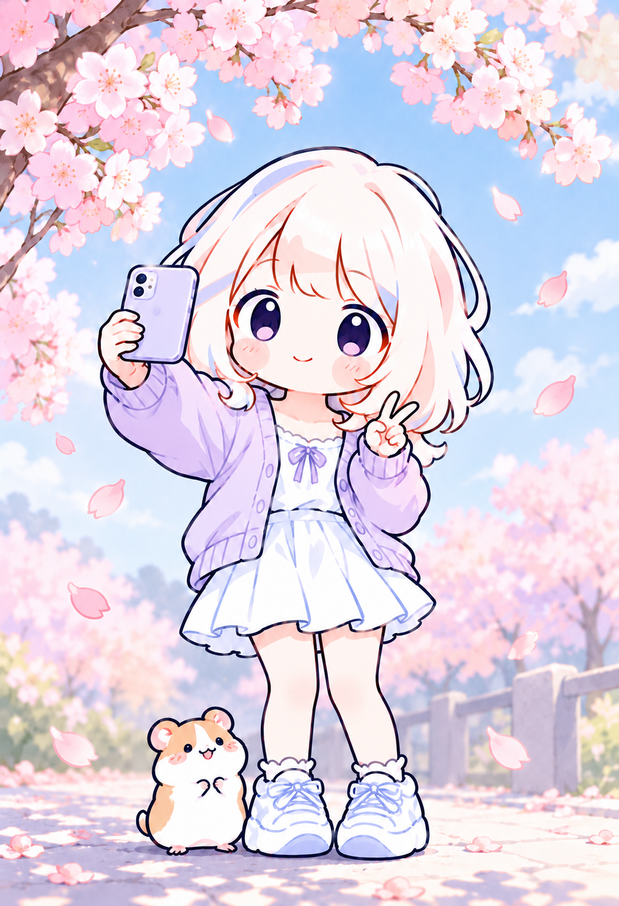

핵심 강점
01사용자 시점에서 생각필요한 화면을 찾기 어려운 상황을 직접 겪어, 버튼과 이동 경로가 잘 보이는 화면을 고민
02팀원과 빠르고 정확한 소통Slack으로 전달받은 업무를 빠르게 확인하고, 목업으로 페이지를 먼저 보여 주며 팀원들과 맞춰 감
03그림에서 영상까지AI 도구를 활용해 캐릭터 그림과 광고 영상까지 제작
대표 프로젝트 · 담당 역할 및 기여
Weather Mate · 날씨 캐릭터 생활정보 웹팀 6명 · 2026.10.13 ~ 10.20
담당 캐릭터 제작 · PPT · 광고 영상
36벌사계절 캐릭터 착장
53초광고 영상



- 날씨에 따라 옷차림이 바뀌는 캐릭터 착장 36벌을 제작하고, 발표 PPT를 제작
- 팀원의 홈페이지 배경과 캐릭터 그림 분위기가 달라 서로 맞춰 다시 제작
- 광고 영상: Flow(Veo)로 장면, AI Studio 음성 API로 대사 제작 (AI 생성 영상 포함)
사내 그룹웨어팀 6명 · 2026.09.11 ~ 09.18
담당 게시판 · 관리자 페이지 (화면 + 기능 구현)
- 공지·자유·부서 등 12개 게시판 카테고리별 읽기·쓰기 권한 구현 · 최신순 정렬과 5개 단위 페이지네이션
- 화면에서 버튼만 숨기지 않고 서버에서도 권한 확인 (댓글·첨부파일) · 테스트 계정 6개로 확인
- 관리자 페이지: 직원 계정(관리자 지정·해제) · 부서(이동·추가·삭제) · 직급(변경·순서) 관리 기능
- 바꾸기 전 확인 창 · 관리자가 아니면 안내 메시지 · 마이페이지(내 연락처 직접 수정)
경력
쇼핑엔티 고객센터 상담쇼핑엔티 소속 · 계약직
2024.12 ~ 2025.03배달의민족 고객센터 상담제니엘 소속 · 계약직
2024.03 ~ 2024.07학력 · 자격 · 해외
서울디지털대학교 AI소프트웨어공학과재학 중 · 디자인 복수전공 준비 (2027 신청 예정)
2024.07 ~창신대학교 중국비즈니스 전공자퇴
2022.03 ~ 2022.12진해용원고등학교졸업
2019.03 ~ 2022.02(KDT) 휴먼AI교육센터 AI활용 JAVA 풀스택 과정
2026.06 ~ 12JPT 620점 (2023.07) · MOS Excel Associate (2025.05)일본 워킹홀리데이 3개월 · 호주 워킹홀리데이 1개월